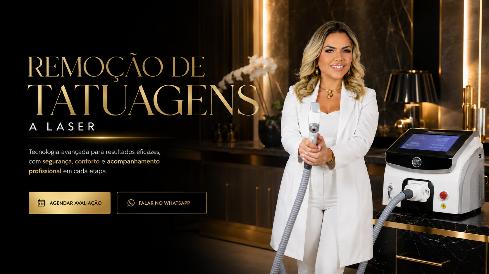

Remocao gradual
Clareamento progressivo com planejamento por sessoes.

Tratamento estetico a laser
Um protocolo personalizado para clarear pigmentos gradualmente, respeitando sua pele, seu historico e seus objetivos.
Sua pele em uma nova fase
Seu corpo muda, seus planos mudam e tudo bem querer se sentir bem na propria pele. A remocao a laser pode ajudar em clareamentos progressivos, remocoes antigas e preparos para novas coberturas.

Clareamento progressivo com planejamento por sessoes.
Plano definido de acordo com pigmento, pele e expectativas.
Equipamento de alta performance para uma aplicacao precisa.
Orientacao antes, durante e depois de cada etapa.
Tecnologia Omer
O equipamento atua na fragmentacao do pigmento para favorecer uma evolucao gradual e segura ao longo do tratamento.

Resultados com evolucao


Pronta para comecar?
Atendimento em Manaus. Substitua o numero do WhatsApp antes de publicar.